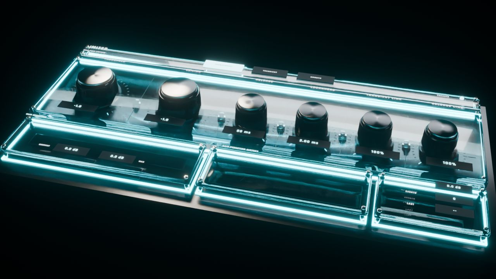
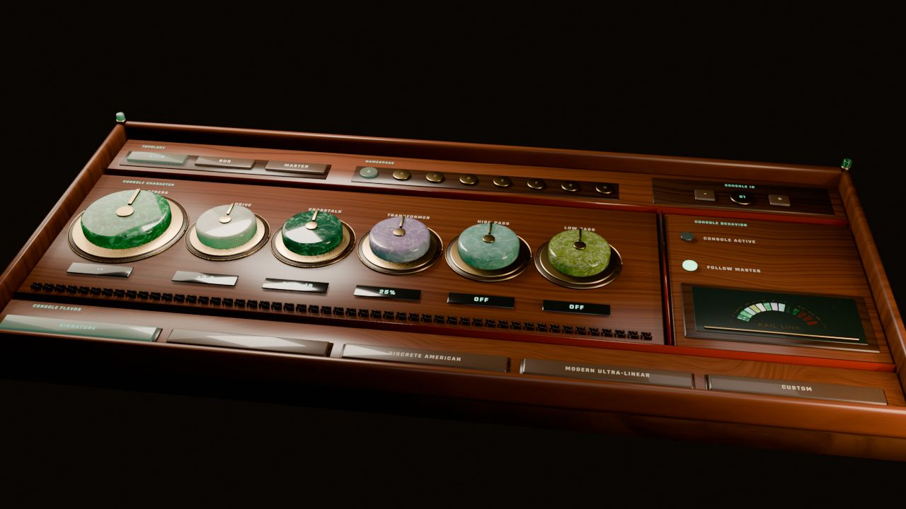
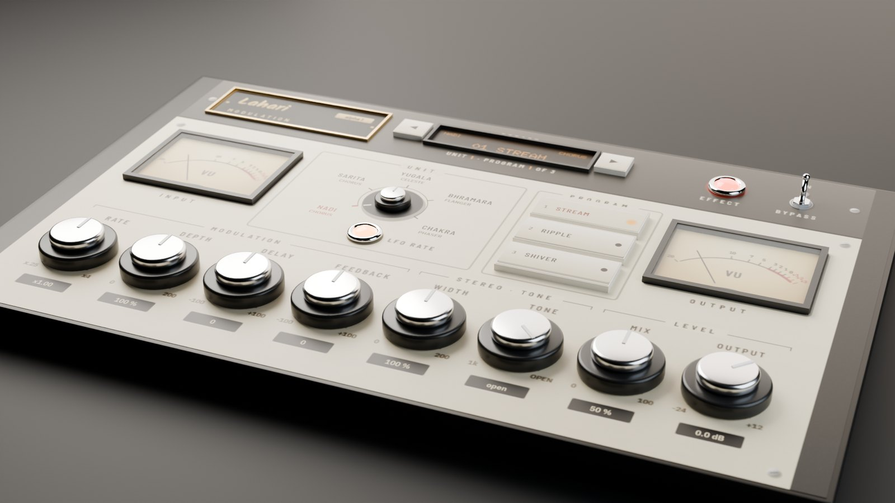

I build plugins, and this is where I keep them.
Pull up a chair. This is my little museum.. a channel strip, an effects box, a distortion, two reverbs and a modulation box. A lot of what they do is fitted to stuff I measured myself, and I built every one of them to feel good under your hands. All VST3, all Windows.

Spanda Limiter · Cinematic skin
The plugins

Spanda
Seven modules in one strip. Lots of it fitted to measurements, and parts you can mix and match.

Gālana
Twelve filters, a Movement section, chorus and delay, in any of six orders. Presets, A/B and undo.

Agni
Two engines, ten shapes, eight pedal models, five routings, a capture slot and cab IRs.

Ākāśa
Six reverbs fitted to the decay and colour of classic digital units.. vintage converters optional.

Shunya
Six clean reverbs. No saturation, no drive, no grain. Just space.

Lahari
Chorus, ensemble, celeste, flanger and phaser, six units, fitted to classic digital chorus sections.
One thing I care about: every plot here I measured offline from the actual plugin, with the settings printed right next to it. And every audio clip is level-matched, dry vs processed. No tricks.. you hear what it does.